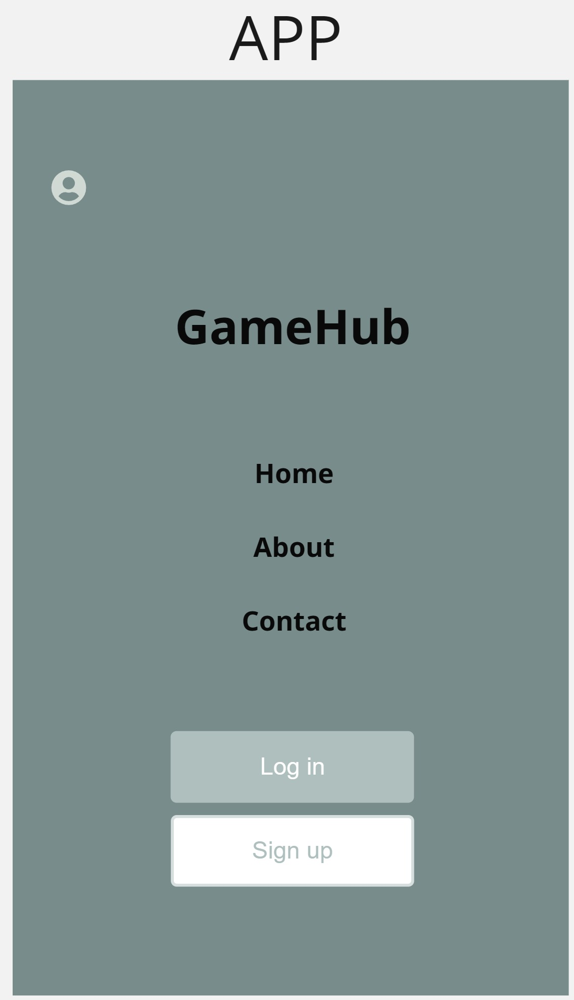
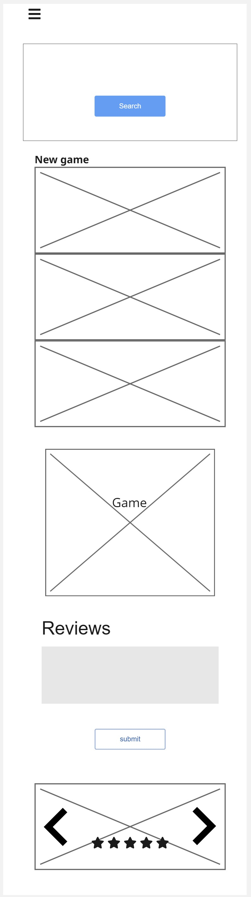
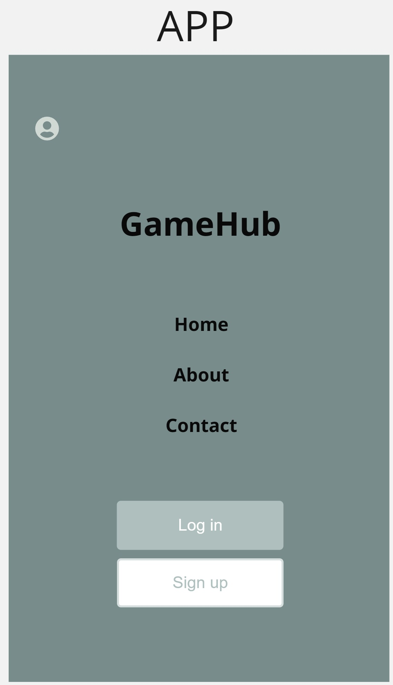
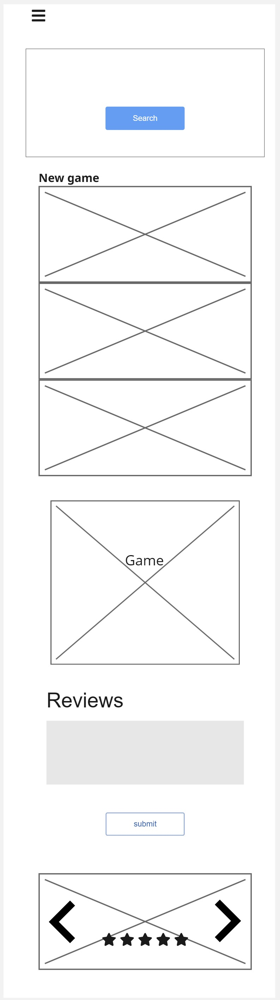
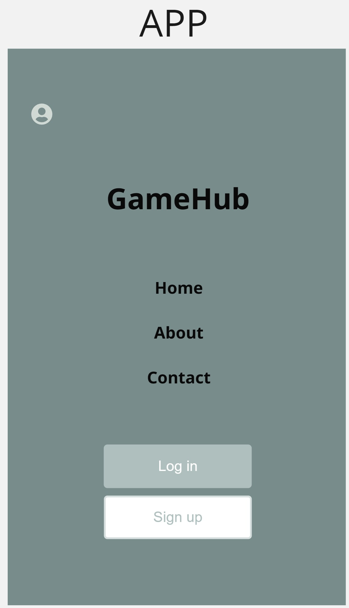
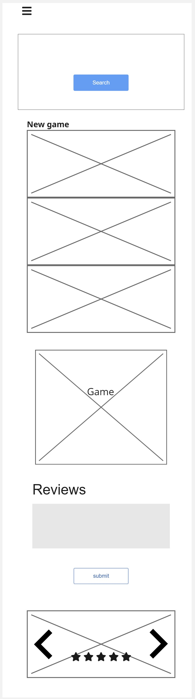

Page Layouts

 





I created the initial web page layout using miro and divided it into desktop and mobile versions


Our colour palette is crafted to evoke a modern, gamer-friendly aesthetic that enhances visual engagement while supporting readability.
This visual hierarchy improves attention flow and usability across all modules.
The site applies structured typographic hierarchy to ensure clarity, rhythm, and legibility across headings, paragraphs, and controls.
Line height and spacing have been fine-tuned to reduce visual clutter and improve flow.
Visual icons and imagery are used not just for decoration, but to aid recognition, categorization, and cognitive mapping of interface elements.
alt text, improving accessibility.These visual cues reduce reliance on text and enhance navigation for all users.
Interactive components are visually distinct through design metaphors, signaling what is clickable, expandable, or focusable.
These affordances improve interaction efficiency and reduce user hesitation across devices.